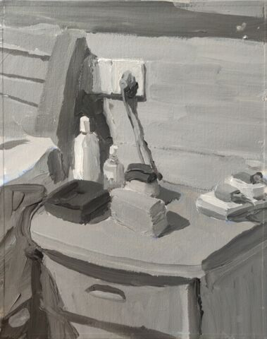
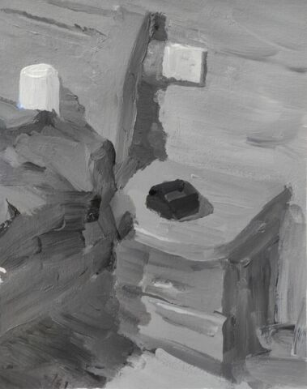
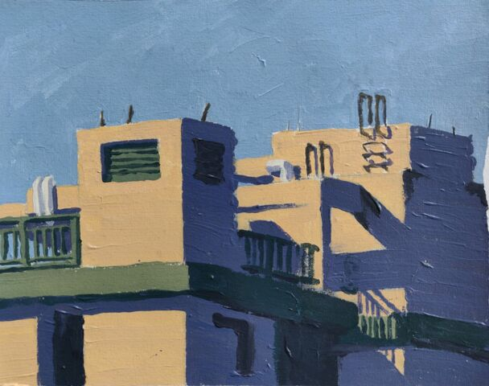
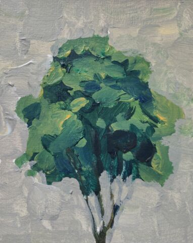

找语言#
- startat:
2021-07-30
- status:
Aborted
课程#
第一讲 综述#
- Date:
2021-07-30
- 艺术语言的三个层面
- 形式语言:
画面的结构 色彩的逻辑 构图 造型
- 图像语言:
图像的文化 图像的修辞：象征、挪用、能指、表征
- 材料语言:
传统材料，综合材料，数字材料
- 找语言
确定主题，围绕主题展开探索和实验，寻找与主体匹配的语言
与自然交流，通过写生积累偏爱
与大师交流，通过临摹分析，学习大师的语言模型
实验材料，体验材料的精神气质，找到合适的材料
王克举 段正渠 白羽平
Odd Nerdrum
- 形式语言
- 色彩
传统色彩
西方中世纪色彩
包豪斯的色彩研究：七大色彩关系，色彩的特征
第二讲 中国传统色彩观#
- 研究传统色彩观念的基本意义
传统色彩和当代的色彩应用处于割裂的状态
对于传统色彩所携带的观念的认识模糊
- 以五色为中心的色彩体系
青赤黄白黑
备注
体系无所谓对错，而在乎是否自洽，及艺术家在此之上的构建
二色体系与阴阳
色彩的抽象性
- 秦汉
浑然一色 二色初分（阴阳 黑白） 三色观（黑白赤） 四色观（黑白黄赤）
- 五色观
正五色（青 赤 黄 白 黑）/五间色（绿 红 碧 紫 骝黄） 五方（）
五行相生相克
- 佛道教色彩
如来顶上五色 佛经五色
中国红 青瓷蓝 水墨黑
- 唐卡的用色规范
藏族的本源之色 白蓝红黄绿 常见的重底色 红黑金银蓝
参见
彭德《中华五色》
牛克诚《色彩的中国绘画》
曾启雄《中国失落的色彩》
陈彦青《观念之色》
第三讲 西方传统色彩观#
为宗教服务的色彩观。
第四讲 色彩的视觉规律#
- 七大色彩关系
色相对比
明度对比
冷暖对比
补色对比
同时对比
纯度对比
面积对比
阿尔伯斯 色彩并置之后的视觉反应
对抗与转化#
一个朴素规律：
画面中至少有两种的对比，才具有色彩感。
梵高《星空》黄蓝 色相，转化：黑白 白黑 明度
梵高《麦田》黄黑 明度 红绿 色相，转化：黄
- 浮世絵 富士山
红绿 色相
色调#
一幅画中画面色彩的总体倾向。
纳比派在印象派的基础上追求光的闪烁感 —— 光是运动的。
配色原理#
单纯的协调
表达时间
表达情绪
表达空间
表达主题
第五讲 色彩与电影#
色彩电影语言的一部分……不同文化背景的人对色彩的理解也是不同的。
- 红色
温暖，刚烈而外向，刺激性强。容易引起人的注意，也容易使人兴奋，激动，紧张，冲动。红色容易造成视觉疲劳。
张艺谋《大红灯笼高高挂》
- 黄色
冷漠(?)，高傲，敏感，有扩张和不安宁的视觉印象。黄色易受印象，中混入其他少量颜色，其色相感和色性格均会发生较大程度的变化。
尼尔.杨《金子心》
- 蓝色
色感冷嘲热讽，性格朴实内向，
《天堂电影院》
- 绿色
《傲慢与偏见》
- 紫色
明度低，深沉，神秘
- +黑
沉闷，伤感，恐怖
《两小无猜》 《阳光灿烂的日子》
- 白色
TODO
- 黑色
沉默，严肃
《黑天鹅》 《钢琴师》
电影情感发生变化的时候，镜头中的色彩也随之改变。
《少年派的奇幻漂流》
瑞典电影大师 塔可夫斯基
第六讲 雕刻时光#
康海涛 如何运用光呈现画面。
肖芳凯 园林风景
王岱山
柯勒惠支 拉图尔 伦勃朗
第七讲 造型的隐秘知识#
- date:
2021-08-27
物质的造型#
法国学院派，巴尔格素描教程
形体的型#
精神是多维度的，型也是多维度的。
形象的型#
感受力是一种艺术潜能，大多数人每天都接触着相似的生活场景，有着类似的生活体验，有些人却能从这些琐碎的生活中汲取灵感。
画面的型#
绘画的本质首先在于形式感，脱离了形式的绘画体现出来不过是自然。
势#
圆（具有体积的，笼统的型）
形体的型（有特征有体积）
形象的型（形体的倾向，形走势，有联系的型）
经典的型（有历史积淀的型）
画面的型
型的训练方法#
质疑：比例，比较方法的盲区
建设：
#️⃣原点思维，重新构建视觉信息源
曲线法：用一根线把对象画像，体验型的本质（匹配）
第八讲 构图研究#
- Date:
2021-09-03 2022-04-10
黑白灰分析#
选取喜欢的艺术家的经典作品，抛开具象因素，分析~
毕加索 《格尔尼卡》
委拉斯凯支 《纺织女》《宫娥》
「势」的分析#
势
型的 倾向 的联系形成画面的走势和动势
画面的「势」是韵律的核心
运动分为「聚」与「散」
画面可能有分主次的多个中心。
避免单调，体现韵律：同 形/元素 的重复。
通过挪动元素来确定最佳动态。
崔白 潘天寿 求险
线描分析#
把自己喜欢的大师的经典作品进行线描式的翻译
古典大师注重线性结构，构图往往从先开始
线性的分析能帮助我们抽离 物象的型 和 形体的型 和 画面的型 之间的联系。
波提切利
格列柯
里维拉
普桑
古典绘画的常见思路：线性 + 亮暗面 => 体积
画面结构分析#
稳定的画面结构往往以简洁的形状呈现。
self: 均分带来的无聊感？
水平线
垂直线
……
重点分析：科尔维尔 怀斯
- 基准线
分配画面的人物（元素）之间的关系
西方传统基准线，基于几何的分割
- 三分:
灵动
- 对称:
严肃
self: 动态的画面如何时刻保持完美画面结构？
第九讲 构图要素#
面积比（常规：3/7 2/8）
色调
明度比：侧重光影，例如：
米勒纯度
……
信息量：和表达相关
水平与非水平：平衡感的建立和打破：危机感
比例
黄金分割比
群组化/聚散
均衡/非均衡
主次
视线（视角）的高低
第十讲 构图模型#
- Date:
2021-09-30 2022-04-21
构图的九种模型：
- 对称型
- 效果:
表现威严、神圣、传统、不可动摇
- 例子:
拉斐尔的 📖 雅典学院
- 偏对称型
- 效果:
表柔和、稳重、自然
- 卫星型
- 效果:
表大气、豪华
- 包围型
- 效果:
表安稳感
- 特征:
一般存在多个元素，并突出其中一个作为重点
- 流水型/S 形
- 效果:
表自然的感染力、自然风韵
- 特征:
画面元素往往承担了在视觉引导的功能
- 例子:
列维坦《Road》1898
- 全景型
- 效果:
表欢快、开放、生动的效果
- 特征:
相对平均，没有明显的重点，通过疏密聚散来形成画面的节奏
- 例子:
老彼得·勃鲁盖尔的大部分画作，例如：📖 尼德兰箴言、《冬季捕鸟陷阱风景》等
- 对决型
- 效果:
充实、严肃的演绎效果；戏剧性的观景
- 特征:
画面中存在矛盾和对抗
- 均衡型
- 效果:
生命的节奏、心灵的跃动 (?)
- 例子:
蒙德里安巴黎时期的作品
- 单边型
- 效果:
都市风格、市场气质
- 例子:
科尔维尔怀斯
- 拉扯型
- 效果:
一拉一拽，强烈动感
- 特征:
和对决型类似，但画面的势往往是逃离画面中心
- 之字形
- 效果:
自然舒畅的透视关系
- 特征:
常用于风景中，相比 S 形更平直
- 例子:
卡茨《缅因牛》怀斯《Soaring》
- D 字形
TODO
- A 字形
- 效果:
中心对称、由近及远、宏大深远
- 特征:
通常具有大的一点透视，大空间，视觉有延伸感
- 例子:
基弗白羽平列维坦《The Vladimir’s road》
备注
2022-04-22 不记得下面的内容是哪里来的了……
黄金分割
《设计几何学》
- 形式要素
线条 空间 光线 形状 时间 色彩 形体 运动 肌理
- 肌理
视觉的需求
精神的引导
历史的痕迹
第十一讲 肌理之笔触#
- Date:
2021-10-01 2022-04-23 2022-04-29
- 巴洛克时期
伦勃朗鲁本斯哈尔斯 围绕造型的，物质的笔触
- 印象派 & 点彩派
莫奈修拉西涅克 表现光与空间，物质的笔触
- 后印象派
梵高 物质性降低，开始具备抽象的韵律
- 抽象派
托姆布雷 看不懂……
待处理
也许需要看看原作
奥尔巴赫在具象的画面上不断修补构成独特魅力
提示
推荐看
素描大师奥尔巴赫科索夫德库宁具象的因素很低，呈现笔触自身的节奏和韵律
塞斯西布朗吴大羽王克举白玉平
段正渠乔治·鲁奥贾科梅蒂展示画面力量、精神追求的笔触
申玲曾梵志黄宇兴李继开大卫·霍克尼
- 传统国画
用墨七法 不同用墨、用笔形成的笔触
- 铜版画
包裹线各种技法- 黑白木刻
不同刀形成的不同线条
艺术家案例 段正渠#
段正渠
笔触与画面结构：分割 韵律 节奏
笔触与主题：历史的沧桑 久远 广袤
笔触与造型 文化 地域风貌
笔触与工具 长锋 短锋
人物造型来源：传统人物造型
📖 双林寺 (平遥) 彩塑造像
艺术家案例 贾霭力#
贾霭力
大尺幅
人与环境之间的关系
艺术家案例 蔡锦，高更#
- date:
2021-10-22
高更
艺术家案例 科尔维尔#
科尔维尔
艺术家案例 构图案例分析 怀斯#
- date:
2021-11-05
怀斯
危机感的设计
基于数学的构图
放大细节的神秘感
艺术家案例 构图案例分析 苏新平#
苏新平
中央美术学院副院长，内蒙人。
语言的演变与主题。
版画：受限制的油画
艺术家案例 构图案例分析 夏俊娜#
夏俊娜
受 🧑🎨巴尔蒂斯 博纳尔 影响很大。
老师是 申玲。
主要结构：锐利的三角形
画面服从精神，而非服从空间。
根据自己的主题制造事物。
艺术家案例 构图案例分析 大卫霍克尼#
大卫霍克尼
约翰莫尔奖得主。
成名作 大水花
水波的提炼。
马远
电脑绘画。
形式语言的训练方法#
形式来源于观念，审美驱动技术发展。
刘丰的讲座。
创新的一个路径：艺术创新 -> 科技创新 -> 商业创新 -> 反馈大众。
王光乐
艺术语言之修辞#
弗雷德《艺术与文化》
修辞：
图像
挪用
能指 + 所指 = 符号
罗兰巴特：刺点
鲍德里亚
贾斯珀·琼斯 美国国旗
Simulacrum 幻象
仿像
福柯 对 马格利特 的分析
图像语言案例分析 尼奥劳赫#
图像学
- 欧文 潘诺夫斯基
艺术的形式与内容不可分离
拼贴 剧场化
老师：伊门多夫
柏林墙
图像语言案例分析 基弗#
常见元素：废墟、残骸、飞机、军舰、女孩的裙子
德雷斯顿轰炸
奥辛维思集中营
大画幅
艺术如何数字化？
避免复制：区块链
视觉震撼：VR
严肃性
细节
图像语言案例分析 杜马斯#
杜马斯
图像语言案例分析 理性的结晶#
张晓刚大家庭达明赫斯特钻石骷髅张洹牛皮佛脸马克奎恩血头像
材料语言#
油画#
晓飞老师的推荐的材料：
- 品牌
普通：鲁本斯、伦勃朗、卢卡斯、梵高、美利等
高端：麦克哈丁、老荷兰、史明克、威廉斯堡、荷尔拜因、布鲁克斯
- 油画色
必选：铅白、土红、土黄、熟褐、象牙黑、茜素红（深茜红、茜红）、朱红（朱砂）、拿坡里黄、群青，土绿
可选：镉红、镉橙、生褐、生赭、酞青绿、酞青蓝
- 画笔
华虹 827 系列 1 2 3 号
华虹 100 系列 1 号
华虹 700 系列 2 3 号
华虹 345 系列 1 2 3 号
华虹 234 系列 1 号
凡高狼毫一套
坦培拉：时间 油画：绵远
丙烯#
丙烯：激烈
快干，适合零碎的时间画
- 品牌
分先后：
高登（Golden、金牌）
丽唯特
贝碧欧
- 色号
见 油画
- 画笔
见 油画
- 媒介剂
品牌：高登油画媒介剂、贝碧欧
效用
加厚凝胶
缓干剂
调和液（纯丙烯）
流平胶（品牌差异大）
裂纹胶
亚光、亮光凝胶
用美纹胶控制颜色
画在木板上：需做底
- 艺术家
马树青
- 底子
作用：提供平整表面、肌理、吸收性
底子要求比坦培拉低
纸板、木板、画布
底子：丙烯、酸醇底料 丙烯塑型膏
色粉#
色粉棒：韩国盟友大师级 申内利尔（顶级）
方棒：硬
圆棒：软
色粉铅笔（不是彩铅）：思笔乐、得韵
色粉末
- 纸
水彩纸
色粉纸
金刚砂纸：高目数
平面雕塑#
精神性、文化性、物质性
雕塑的绘画性，材料感 罗丹
塔皮埃斯封塔纳李禹焕物性隋建国时间的形状
作业#
以 xfczk3 为 ID。
找至少十位与自己主题和语言相近的艺术家，进行系统的学习和模仿，进行构图分析，色彩分析，图像分析
从 找自己 和 找主题 作业中至少找出 20 张作品，以此为起点，展开材料尝试与实验：例如用油画、水彩、坦培拉分别画一遍
艺术家作品分析#
丙烯材料实验#
以 xfczk3-ac-%d 为 ID。
材料购买#
待处理
材料清单
熟悉材料#
- xfczk3-ac-000#
-
待处理
图片未上传
画的是定画液瓶子，很烂，完全没有经过脑子，留下来当个纪念吧。
- xfczk3-ac-001#
-
待处理
图片未上传
这张水彩纸放了好几年，终于有用处了。
模仿晓飞老师的色彩训练课程的涂格子，目的有二：
熟悉下调色和涂抹：要涂得厚且均匀，不透露出底色，说实话还是不够大胆，感觉还是画水彩惯了
训练明度的控制：左三列右三列第一排颜色随便给，之后从上到下慢慢提升明度（对黑白来说当然就只是加白），提升时要注意保持三个颜色的明度关系不变
似乎白色的色相确实是偏冷的……正经的色彩训练，看看今年有没有时间去晓飞老师那里再学吧。
- xfczk3-ac-002#
-

用丙烯画小场景，按之前的习惯先从光影入手。有覆盖性的材料还是应该先画固有色再画光影，也好在因为有覆盖性，画坏了怎么也能改回去。作为第一张正儿八经的丙烯，也算合格吧。
除了小场景强调的光影的规律和秩序，另一个要注意是笔法，笔法是表达形体的手段：一个面最好一笔完成，并且要沿着形体的走势。虽然老师说
📅室内场景训练是油画的前置课程，不过笔法上炭粉和颜料差距还是很大（更可能是我用炭粉粉的方法和别人不一样？），应该多熟悉一下。这一张用颜料阔绰多了，有点心疼，但不用多一点根本画不上去。
{kind=link}
- xfczk3-ac-003#
-

先画固有色再画光影的尝试，没有很成功。感觉主要原因是一开始的色序没选对，整体太黑了。
颜料里尝试加入了亚光媒介，似乎有那么一点效果。
{kind=link}
- xfczk3-ac-004#
-
待处理
图片未上传
画在小区拍的照片，当天正值退潮，妄图不起稿直接往上画，失败了。失败了也记录下来吧，我不在乎。
颜料里尝试加入了龟裂膏，没有裂开，不知道是不是因为在纸上的原因
- xfczk3-ac-005#
-

继
《xfczk3-ac-004》的失败后，画了详细的底稿，谨慎上色，结果还能看。画细微处的时候用小笔也控制不好，此时颜料太稠了，不好控制笔峰，可是不稠又感觉会透出底色，盖不上去。
分两天画完，颜料里加了缓干媒介 + 喷水 + 用罐子盖上，保湿效果相当好。 画完自然干两天后，刷了一遍亮光媒介。
{kind=link}
- xfczk3-ac-006#
-

丙烯的常规用法大概是：不加水 + 厚笔触 + 多层叠加。打算用这样的方式画几张找找感觉。
{kind=link}
2D 数字绘画实验#
待处理
2D 数字绘画实验 Procreate
3D 数字绘画实验#
待处理
3D 数字绘画实验 Pico + MultiBrush
新材料的创作尝试#
如果你有任何意见，请在此评论。 如果你留下了电子邮箱，我可能会通过 回复你。